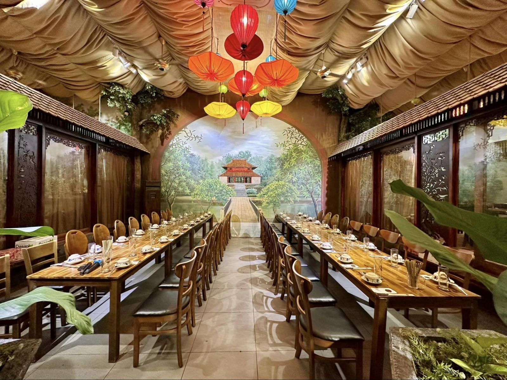

CÂU CHUYỆN
Hành Trình Của Chúng Tôi
Được thành lập từ năm 2012, Vị Ngon Fine Dining mang trong mình khát vọng giới thiệu nét đẹp của ẩm thực Việt Nam qua những món ăn được chế biến từ nguyên liệu tươi ngon, kết hợp cùng phong cách trình bày tinh tế.
Chúng tôi luôn đặt chất lượng món ăn, sự tận tâm trong phục vụ và trải nghiệm của thực khách lên hàng đầu, tạo nên một không gian ẩm thực sang trọng nhưng vẫn gần gũi, đậm đà bản sắc Việt.